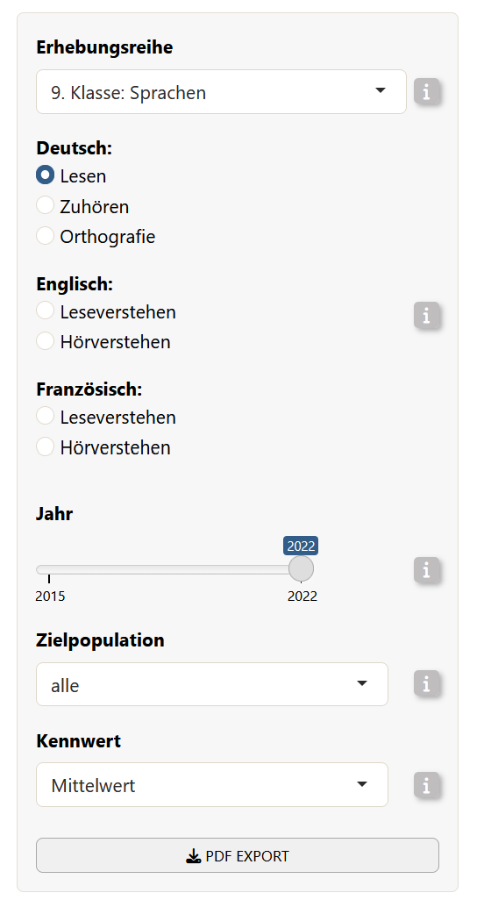
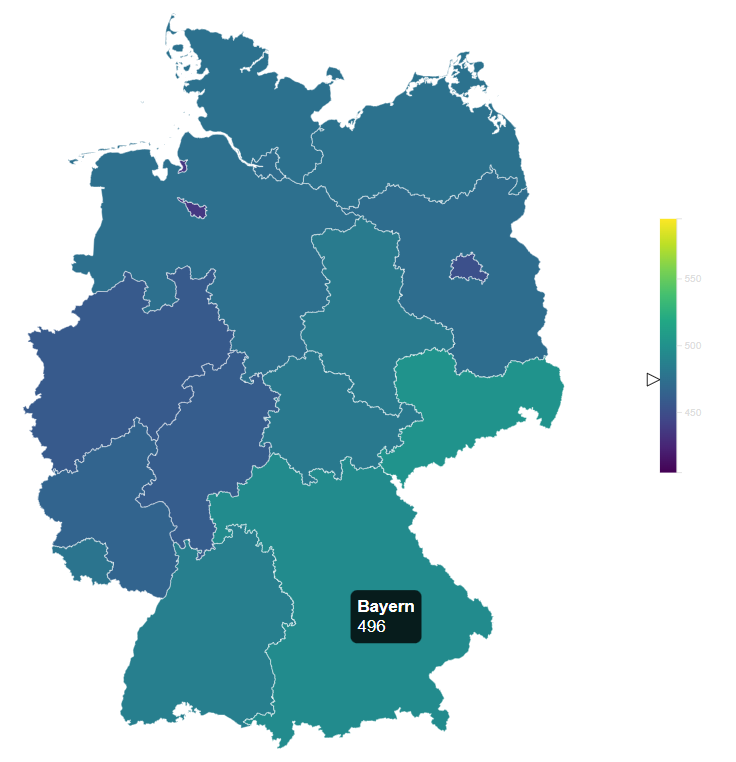

eatMap is a helper package that transforms the input data frame from the BT-ShinyApp into an interactive widget using JavaScript. It is a small R wrapper around a JavaScript/htmlwidgets map of Germany for displaying IQB Bildungstrend results inside a Shiny application.
Installation
You can install the development version of eatMap from GitHub with:
# install.packages("devtools")
devtools::install_github("iqb-research/eatMap")Usage
Required by eatMap():
-
data: prepared result data selected by the user of BTShinyApp. -
config: a nested R list provided by the BTShinyApp that contains information on which subject areas and competencies exist and how the variables in the data object should be labeled, grouped, colored, and shown. -
lang: “de” or “en”.
Returned by eatMap():
- an
htmlwidgetthat can be embedded in Shiny viarenderEatMap()andeatMapOutput()
Example: Testing the Map locally
eatMap is designed to be used together with BTShinyApp. During development, changes to the JavaScript map code can be tested with example data from BTShinyApp.
library(BTShinyApp)
BTdata <- readRDS(
system.file("extdata", "BTdata_processed.Rds", package = "BTShinyApp")
)
load(
system.file("extdata", "ui_variables.rda", package = "BTShinyApp")
)The object BTdata contains the processed Bildungstrend data. The file ui_variables.rda provides additional UI/configuration objects, including the config object used by eatMap().
Next, we simulate a data selection that usually happens in the BTShinyAPP user interface.
This selects one concrete subset of the Bildungstrend data: German reading results for grade 9, cycle "9. Klasse: Sprachen", parameter "mean", year 2022, and target population "alle"…
|
Code |
Which corresponds to…  |
Then, you can render the map locally:
eatMap(
data = map_data,
config = config$de,
lang = "de"
)
The flow inside BTShinyApp
Within BTShinyApp, eatMap is used as the interactive map output. In the server, the Shiny app handles user input, filters the processed Bildungstrend data, and passes the selected data subset together with the language-specific configuration object to eatMap:
output$deutschlandkarte <- eatMap::renderEatMap({ # save the map into output so it can be accessed by the UI
eatMap::eatMap(
data = data_selected(), # The data of the selected configuration by the user
config = config[[lang()]], # The config object with the chosen language
lang = lang() # which language was chosen
)
})Then, in the UI, the map is placed with:
eatMapOutput("deutschlandkarte", width = "100%", height = "auto")Making changes in eatMap
When making changes to the map, the typical workflow is:
- Load processed example data from
BTShinyApp. - Select one realistic result subset (see example above).
- Make changes in the JavaScript source files. JavaScript changes should be made in
srcjs/modules. - Bundle the JavaScript code into the htmlwidget (see below).
- Test the map locally with
eatMap().
After changing the JavaScript source files, bundle the widget again:
# Install the following dependencies if needed:
install.packages("packer")
packer::npm_install()
# Call:
devtools::document()
# Reload the package:
devtools::load_all()
# Bundle JavaScript changes into inst/htmlwidgets:
packer::bundle()The command packer::bundle() writes the bundled JavaScript files to inst/htmlwidgets. These bundled files are the files used by the R htmlwidget.